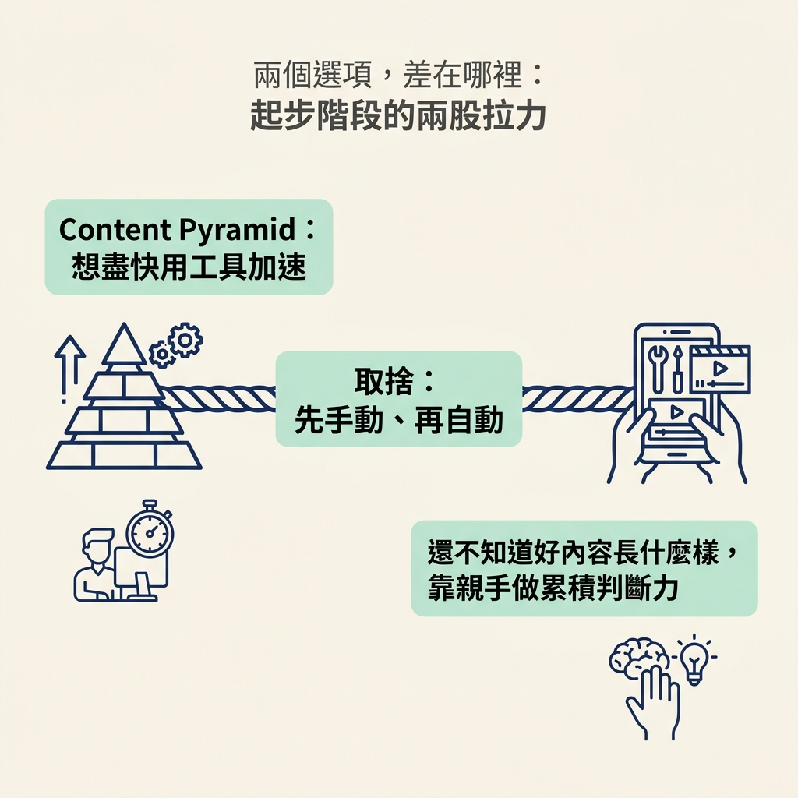
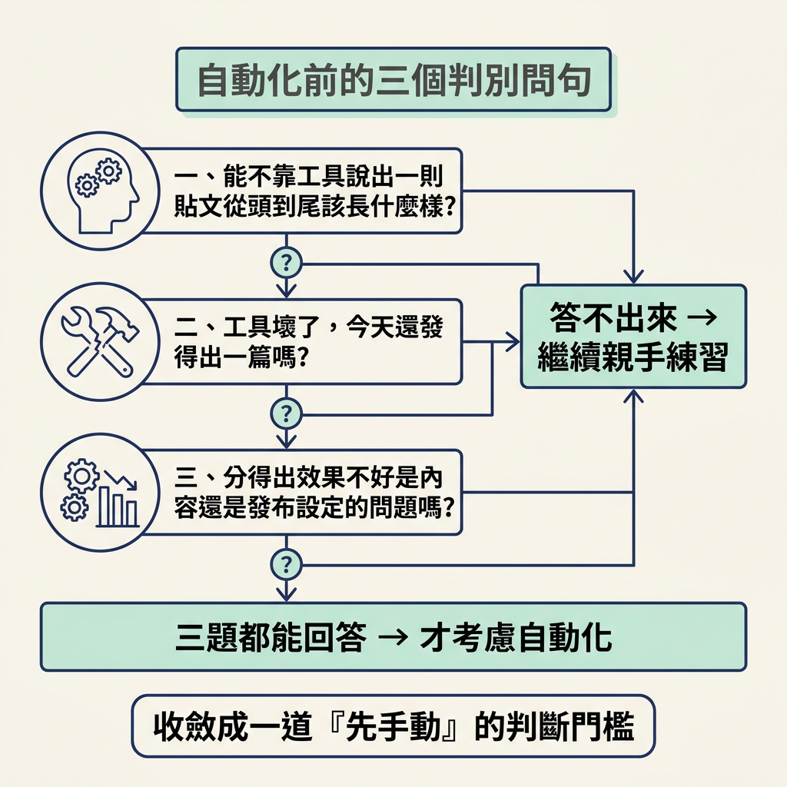

你會練習判斷：為什麼起步時要親手用手機編輯、發文，等摸熟製作手感後，再考慮自動化。
前一節我們談過 Content Pyramid：量是底座，要先把底座堆起來，上面才有東西可以疊。接下來這一步，要把「大量發布」變成實際行動：拿前面學到的內容觀念，親手做出貼文、發出去，並在過程中摸熟製作方式。它的產出不只是已發布的內容，還有你對「一則貼文怎樣才算做好」的判斷力。
可是一想到「要發很多」，很容易冒出一個誘人的念頭：是不是該趕快把流程自動化，一次排程一大批內容？這個想法聽起來很合理，畢竟工具似乎能讓你更快衝量。但課程對起步階段的建議很明確：先用手機親手編輯、親手發文，等摸熟之後再自動化。這一節要說明背後的取捨，讓你能自己判斷，而不是只把它當成一條規矩。
這個決定牽涉兩股拉力。Content Pyramid 強調先堆高內容量，讓人想盡快使用工具加速；但在起步階段，你還不知道一則好內容長什麼樣，親手練習能讓你從製作過程中累積判斷力。

| 先手動（用手機親手做） | 先自動（先上工具） | |
|---|---|---|
| 你學到什麼 | 製作內容的完整手感 | 工具的操作流程 |
| 對好壞的判斷 | 親手摸索出自己的標準 | 可能還說不清楚好在哪裡 |
| 出錯的時候 | 比較容易找出是哪一步出了問題 | 不容易分清是內容還是設定出了問題 |
| 換一個題材時 | 能依情況調整做法 | 可能得重新摸索工具流程 |
| 適合的時機 | 剛開始、還沒有手感時 | 已經摸熟，重複工作成為瓶頸時 |
關鍵差異在於：親手做過一輪，你才有機會練出「什麼叫做得好」的判斷力。你會發現哪種開頭讓人想跳過，或哪種收尾講起來不順。工具能幫你執行流程，卻不能替你決定自己想要什麼。
反過來說，如果一開始就依賴工具，出了問題時，你可能分不清是內容寫得不理想，還是設定出了錯。這樣一來，學習就容易卡住。工具本身沒有問題，關鍵是你是否已經熟悉要交給工具處理的工作。
要知道自己該繼續手動，還是可以開始自動化，可以先問自己以下三個問題。只要有一題答不出來，就表示你可能還需要親手練習。

「先手動」不是永遠適用的規矩。等你已經親手做過一段時間，知道好的成品長什麼樣，而且重複動作開始成為瓶頸，自動化就能幫你放大已有的手感。省下來的時間，可以用來增加產量、嘗試更多做法，而不是跳過還沒學會的部分。
判斷的關鍵是「你已經會了」，不是「你已經膩了」，也不是「工具看起來很酷」。提早自動化，有時是想跳過還不熟、做起來卡卡的階段；但那往往正是最需要親手練習的時候。先確認自己摸熟了，再決定是否把流程交給工具。
起步時，先用手機親手編輯與發文，不要急著自動化。只要你還說不出好成品的樣子、工具一出問題就無法發文，或分不清問題出在內容還是設定，就繼續手動；等你摸熟製作流程，而且重複動作成為瓶頸，再讓工具接手。
到這裡，心態（先衝量）、模型（Content Pyramid）和執行原則（先手動）都已經到位。接下來要把這些原則變成每天看得見、做得到的習慣：最後一節會用一張 100 格的進度表，整理成一套可以計數的系統。